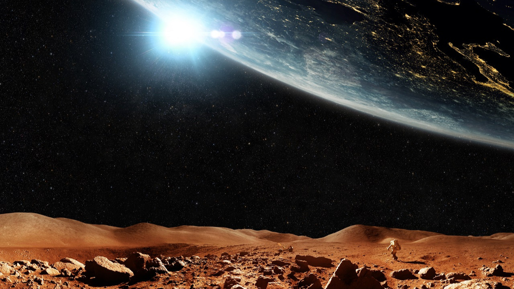
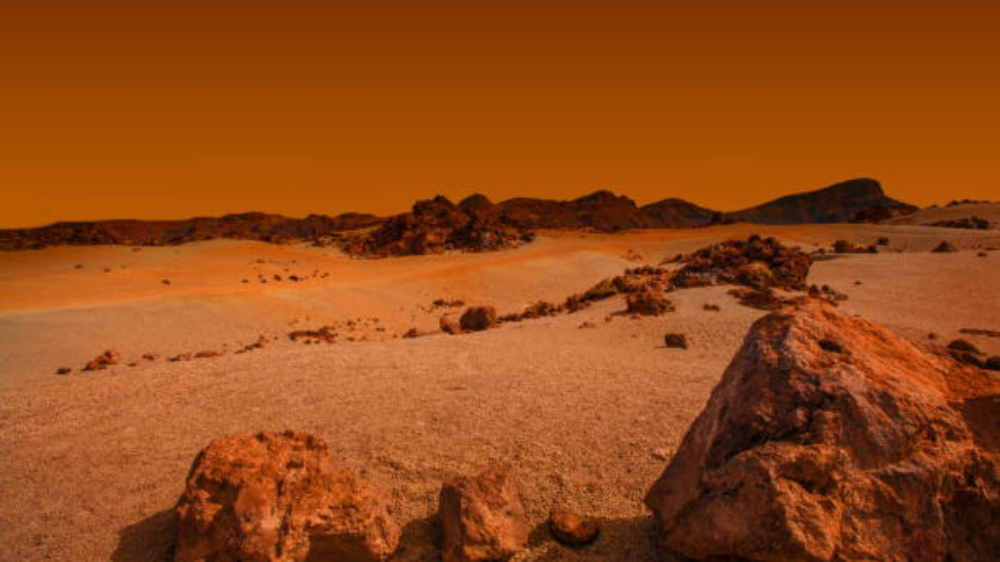

Hakkında
Mars, Güneş Sistemi içinde Güneş’e yakınlıkta dördüncü sırada olan "Merih" ya da "Kızıl Gezegen" olarak da bilinen halkasız bir gezegen. Phobos ve Deimos adında iki uydusu var. Mars Güneş Sistemi'nde Merkür'den sonra en küçük gezegen. Ortalama çapı 6.780 km, Güneş’e ortalama uzaklığı ise 1,5 AB.
Mars araştırmaları
Mars’a gönderilen uzay araçları, Dünya'ya olan benzerliği ile her zaman ilgimizi çeken Mars gezegeni hakkında bilgiler göndermeye devam ediyor.
Mars, Robot keşif araçlarıyla incelenen tek gezegen olmasının yanı sıra Dünya’dan sonra yüzeyi hakkında en çok bilgiye sahip olunan gezegendir.
Mars’ın yüzeyinde şu anda NASA’nın 26 Kasım 2011’de Mars’a gönderdiği ve 6 Ağustos 2012’den beri görev yapan Curiosity, 5 Mayıs 2018’de Mars’a gönderdiği ve 26 Kasım 2018’den beri görev yapan InSight, 30 Temmuz 2020’de Mars’a gönderdiği ve 18 Şubat 2021’den beri görev yapan Perseverance uzay araçları bulunuyor. Ayrıca Çin Uzay Ajansının 23 Temmuz 2020’de Mars’a gönderdiği ve 14 Mayıs 2021’de görevine başlayan Zhurong adlı uzay aracı da Mars’ın yüzeyindeki çalışmalarını sürdürüyor.

Marsa kızıl gezegen denme sebebi
Demir büyük kütleli yıldızların çekirdeğinde füzyon tepkimeleri sonucu oluşur ve yıldızlar ömürlerinin sonuna geldiğinde süpernova patlamaları sonucu uzaya yayılır. Daha sonra yıldızlararası ortamda bulunan diğer maddelerle karışarak farklı yıldız sistemlerinin oluşumunda yer alabilir. Yerkabuğunda en bol bulunan dördüncü element olan demir, Mars’ın yüzeyinde de çok miktarda bulunur. Ancak Mars’ın atmosferi büyük oranda karbondioksitten oluştuğu için demir atomları elektron kaybederek yükseltgenir ve demir oksit bileşiklerini oluşturur. Pas olarak da bildiğimiz demir oksit bileşikleri kırmızımsıdır.
Mars’a gönderilen uzay araçları sayesinde elde edilen görüntüler Mars’ın yüzeyinin tamamının kırmızı olmadığını gösteriyor. Demirin yükseltgenme sürecinde oluşan bileşiklerin türüne göre ve diğer minerallerin etkisi nedeniyle Mars’ın yüzeyi -kahverengiden karamel rengine hatta yeşilimsi renklere kadar değişen- farklı renklerdedir. Yüzeyindeki demir oksit bileşiklerince zengin topraktan dolayı, Mars’ın atmosferi bu minerallerden oluşan toz parçacıklarıyla kaplıdır. Bu nedenle Dünya’dan bakıldığında Mars kırmızı görünür.
